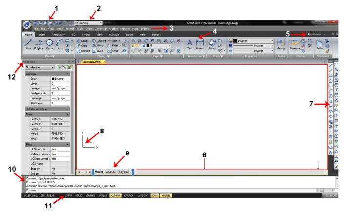

Interfejs użytkownika
Możesz cieszyć się pracą w środowisku programu GstarCAD 8 na kilka różnych sposobów. Użytkownik ma możliwość spersonalizowania interfejsu programu poprzez określenia położenia wyświetlanych elementów takich jak paski narzędziowe, pasek poleceń, swobodne przełączanie się pomiędzy obszarami pracy, zmianę motywy interfejsu i odblokowanie paska stanu. Paski narzędziowe i pasek poleceń mogą być zadokowane lub swobodnie przemieszczane i wyświetlane w dowolnym miejscu ekranu.

Rys. 3-1. Interfejs programu.
1. Pasek szybkiego dostępu: Wyświetla najczęściej używane narzędzia takie jak: Nowy, 15 Otwórz, Zapisz, Cofnij, Zapisz jako, Drukuj, Podgląd wydruku i Pomoc. Ponadto można go spersonalizować (poprzez dodanie innych poleceń za pomocą przycisku rozwijalnego) lub wybrać czy menu szybkiego dostępu będzie wyświetla nad czy pod interfejsem wstążkowym.
2. Przełączanie obszaru roboczego: Pozwala na przełączanie pomiędzy dwoma rodzajami interfejsu (Rysowanie 2D i GstarCAD Klasyczny).
3. Pasek Menu: Jest używany do wyboru poleceń za pomocą myszy zamiast wprowadzania poleceń z klawiatury. Znajdują się tu następujące zakładki: Plik, Edytuj, Widok, Wstaw, Format, Narzędzia, Rysuj, Wymiar, Modyfikuj, Okno, Pomoc i Express.
4. Interfejs wstążkowy: Składa się on z kilku paneli, które są uporządkowane zgodnie z przypisanymi im etykietkami. Narzędzia widoczne w każdym z paneli są również dostępne w paskach narzędziowych i oknach dialogowych.
5. Wygląd: Użytkownik ma możliwość zarządzania zakładkami plików i paskiem powiadomień.
6. Obszar rysowania: Rysunek wyświetlany jest w oknie rysowania.
- Pasek rysowania
- Pasek kontroli rysowania
- Pasek zmian
- Pasek właściwości
- Pasek narzędzi warstwy
- Pasek narzędzi stylów
- Standardowy pasek narzędzi
8. Układ współrzędnych użytkownika (LUW): Ikona wyznacza orientacje rysunku w dwu wymiarowej przestrzeni.
9. Zakładki przestrzeni Modelu i przestrzeni Układu: Kliknij na zakładkę aby przełączyć się pomiędzy rysowanym modelem i układem wydruku.
10. Okno poleceń: Pasek poleceń jest to okno z możliwością zadokowania, w którym wprowadzane są nazwy poleceń za pomocą klawiatury. W oknie tym wyświetlane są również powiadomienia i inny komunikaty zwracane przez program. Okno poleceń można przeciągnąć w dowolne miejsce ekranu. Jeżeli pasek poleceń jest niezadokowany, możesz rozciągnąć jego okno aby otrzymać większą liczbę widocznych linii tekstu.
11. Pasek stanu: Wyświetla informacje takie jak bieżące współrzędne kursora, opcje Snap, Grid, Ortho, Polar, Osnap, Otrackand i inne ustawienia. Poza wyświetlaniem informacji, pasek stanu pozwala na szybki dostęp do wielu funkcji. Klikając elementy paska stanu można szybko dokonać zmian. Kliknięcie prawym przyciskiem myszy na element paska powoduje wyświetlenie menu skrótów pozwalające na wybranie większej ilości dostępnych opcji. Domyślnie pasek stanu wygląda tak jak na rysunku poniżej: Klikając prawym przyciskiem myszy na pustą przestrzeń paska stanu można wyświetlać lub ukrywać polecenia a nawet zmieniać je w ikony:
12. Paleta Właściwości: Możesz modyfikować wartości lub właściwości obiektów w każdej z kolumn. Paleta Właściwości pokazuje wszystkie właściwości określonego obiektu. Jeżeli wybierzesz wiele obiektów, Paleta Właściwości pokaże polecenie właściwości zaznaczonych obiektów. Jeżeli żaden obiekt nie zostanie zaznaczony, Paleta Właściwości wyświetli ogólne właściwości bieżącej warstwy, a także właściwości jako informacje Układu współrzędnych użytkownika. Domyślnie podwójne kliknięcie na obiekt otwiera Paletę Właściwości jeżeli paleta jest ukryta. Operacja ta jest niemożliwa gdy obiekt jest blokiem, wzorem kreskowania, tekstem, odnośnikiem zewnętrznym lub wypełnieniem gradientowym.
[Źródło: gstarcad.pl]